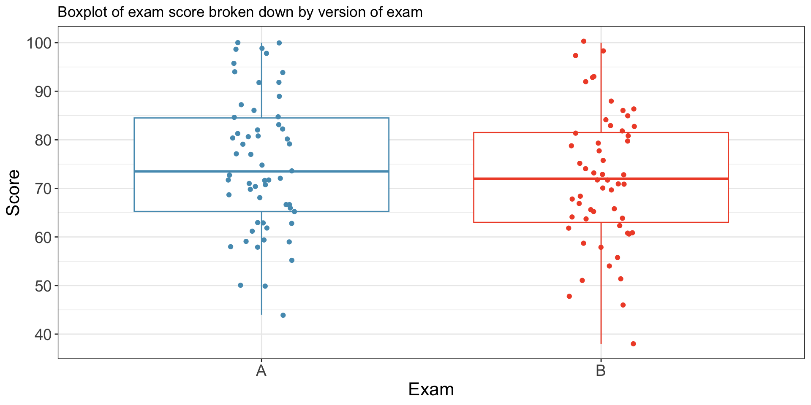
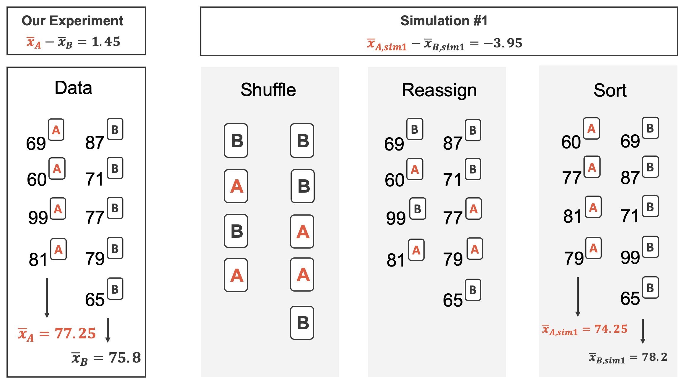
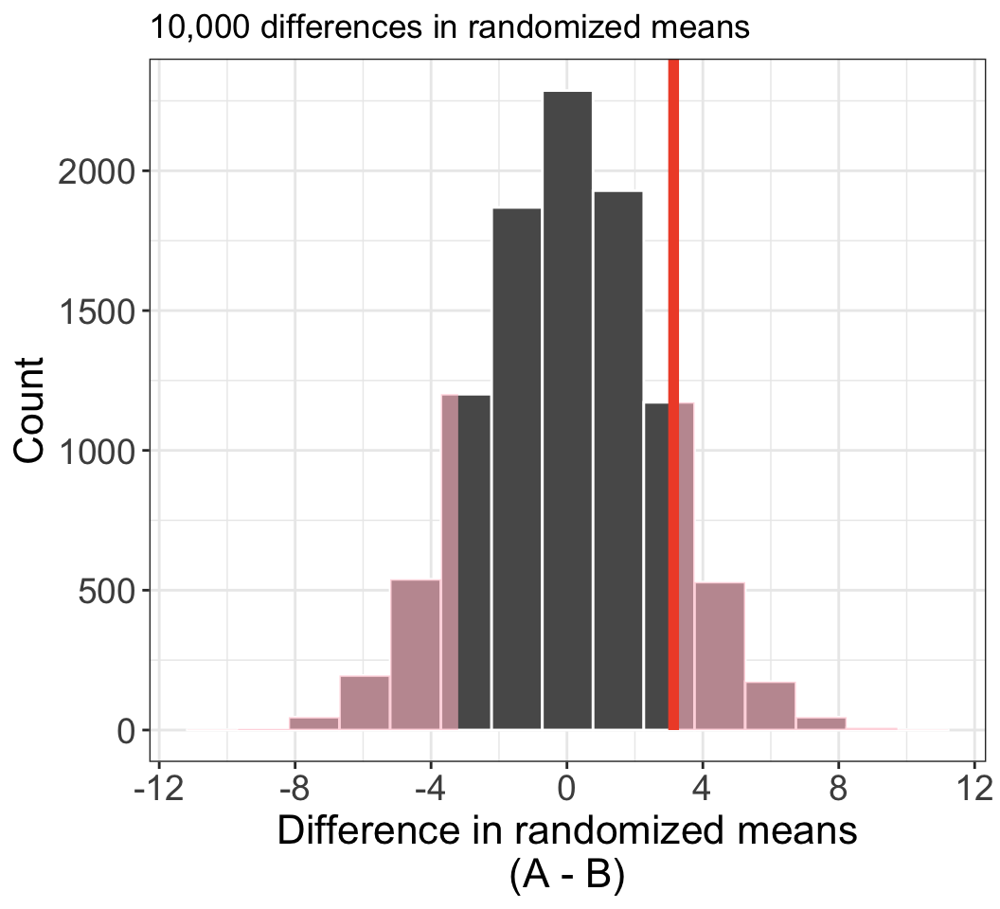
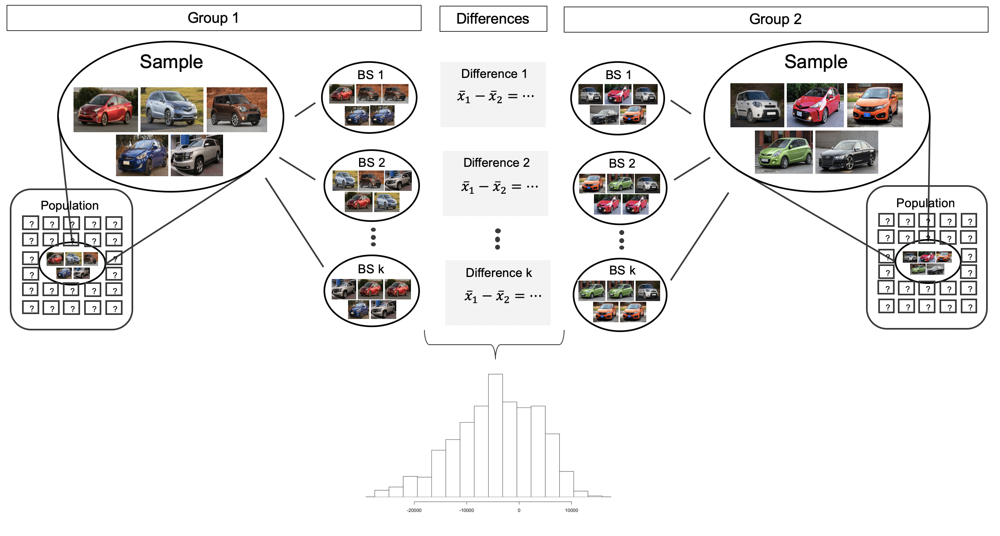
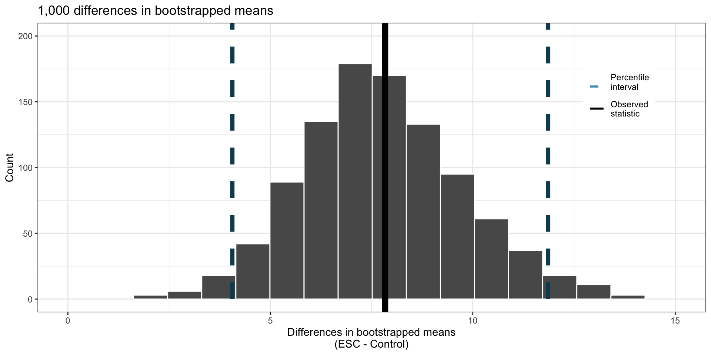

We used the bootstrap to create CIs and hypothesis tests for a single mean\(\mu\).
e.g. to understand a single numeric value about a population (e.g., height, weight, etc).
Inference for difference of two means
Now: CIs and hypothesis tests for the difference of two means\[\mu_1 - \mu_2,\] the mean of two different populations. Examples:
Do pregnant women who are smokers vs. non-smokers have differences in baby weight?
Was one exam more difficult than another?
Are Americans taller or shorter than Canadians?
For \(\mu_1 - \mu_2\), the point estimate is \[\bar x_1 - \bar x_2,\] where \(\bar x_i\) is sample mean from population \(i\). Many previous ideas will carry over
Randomization tests
Bootstrap for difference of means
Mathematical approach (Central Limit Theorem)
Randomization test
Example: Two slight variations of an exam.
Each student received a random version (A and B).
Anticipating complaints, the instructor wants to see if the difference observed between the groups is large enough to provide convincing evidence that one version was more difficult (on average) than the other version.
Summary statistics for how students performed on these two exams:
Group
n
Mean
SD
Min
Max
A
58
75.10
13.87
44
100
B
55
71.96
13.77
38
100

Figure 1: Boxplot and points of exam scores separated by exam version.
Hypotheses to evaluate whether observed difference in sample means is likely to have happened due to chance:
\(H_0\): exams are equally difficult; \(\mu_A = \mu_B\).
\(H_A\): one exam is more difficult; \(\mu_A \neq \mu_B\).
Observations regarding setup:
Independence within each group and between groups since exams shuffled and randomly passed out.
min/max values suggest no outliers .
We’ll use an \(\alpha = 0.05\) discernibility threshold.
Randomization test: variability of the statistic
Previously, we estimated the variability of the proportion difference \(\hat p_1 - \hat p_2\) by randomly assigning treatment to each observation. Here we do something similar.
To simulate the null hypothesis, we
randomly assign 58 of the observed exam scores to group A (the remaining 55 scores then get assigned to group B), then
examine the difference \(\bar x_{A,sim1} - \bar x_{B,sim1}\)

Figure 2: Cartoon of randomization/shuffling procedure.
Repeating this 10,000 times, we estimate the natural variability in \(\bar x_A - \bar x_B\) when there is no dependence between group and exam score.

Figure 3: Histogram of difference in randomized means under null hypothesis. The red vertical line indicates the observed difference in sample means.
The observed difference (highlighted above) was 75.1 - 71.96 = 3.14.
1195 out of 10,000 randomization trials produce a difference \(\geq\) 3.14;
1173 produce difference \(\leq\) -3.14.
p-value is then \(\approx\) (1195 + 1173) / 10000 = 0.2368.
Larger than \(\alpha = 0.05\) threshold: fail to reject \(H_0\).
Conclude: the data do not provide enough evidence that one exam version was more difficult than the other.
Bootstrap CI for difference in means
Example: assess 2 car lots; which one has a cheaper average price?
We have a sample of 5 cars from each lot.
We take bootstrap samples from each group,
then calculate sample means in each bootstrap sample, \(\bar x_{1}^{(i)}\) and \(\bar x_{2}^{(i)}\),
then build a distribution of the bootstrapped differences \(\bar x_{1}^{(i)} - \bar x_{2}^{(i)}\),
then create a CI for the difference in means \(\mu_1 - \mu_2\).

Figure 4: Cartoon of bootstrap procedure for car example.
Bootstrap CI: stem-cell case study
Consider the following experiment that seeks to examine whether using embryonic stem cells (ESC) help improve heart function following a heart attack
In experiment, people are randomly assigned to treatment (ESC) and control groups, and then had their heart pumping capacity measured
Want to compute 95% CI for effect of ESC on heart pumping capacity
Summary statistics from experiment:
Table 1
Group
n
Mean
SD
ESC
9
3.50
5.17
Control
9
-4.33
2.76
Point estimate of the difference in heart pumping capacity:
Use bootstrap to estimate the distribution of difference in sample means when repeatedly sampling:

Figure 5: Histogram of differences of two bootstrapped means. The thick solid vertical line indicates the observed difference. The dashed vertical lines indicate the 2.5 and 97.5 percentiles.
Bootstrapped CI does not include 0.
Conclude: ESC increases heart pumping capacity
If the CI did include 0, then we would not have enough evidence to conclude that ESC increases heart pumping capacity
We would not say that “we have evidence that ESC does not change heart pumping capacity”.
Mathematical model for testing difference in means
Example: Is there evidence that newborns from smokers have different birth weight than non-smokers?
Let \(\mu_n\): average birthweight of non-smokers, \(\mu_s\): smokers. Set up hypotheses:
\(H_0\): no difference in average birthweight for newborns from smoking vs. non-smoking mothers: \(\mu_n - \mu_s =0\);
\(H_A\): There is some difference: \(\mu_n -\mu_s \neq 0\).
Data
We’ll use: openintro::births14 dataset. Consists of randomly sampled survey of mothers in the US. First few rows below.
fage
mage
weeks
visits
gained
weight
sex
habit
34
34
37
14
28
6.96
male
nonsmoker
36
31
41
12
41
8.86
female
nonsmoker
37
36
37
10
28
7.51
female
nonsmoker
NA
16
38
NA
29
6.19
male
nonsmoker
Summary statistics from the data:
Habit
n
Mean
SD
nonsmoker
867
7.27
1.23
smoker
114
6.68
1.60
Mathematical model for testing: Variability of the statistic
The test statistic for comparing two means is a T score
(Street-fighting math: Before formally computing the p-value, guess whether or not we reject \(H_0\) based on the T score and df.)
Compute the one-sided tail area:
pt(-3.69, df =113)
[1] 0.0001733097
Doubling this gives p-value of 0.00034.
The p-value is much smaller than the significance value, 0.05, so we reject the null hypothesis \(H_0\).
Conclude: The data provide is convincing evidence of a difference in the average weights of babies born to mothers who smoked during pregnancy and those who did not.
Mathematical model for estimating difference in means (CI)
The \(t\)-distribution can be used for inference when working with the standardized difference of two means if
Independence (extended). The data are independent within and between the two groups, e.g., the data come from independent random samples or from a randomized experiment.
Normality. We check the outliers for each group separately.
Conclude: we are 95% confident that heart pumping function in those that received ESC treatment is between 3.32% and 12.34% higher than for those that did not receive ESC.